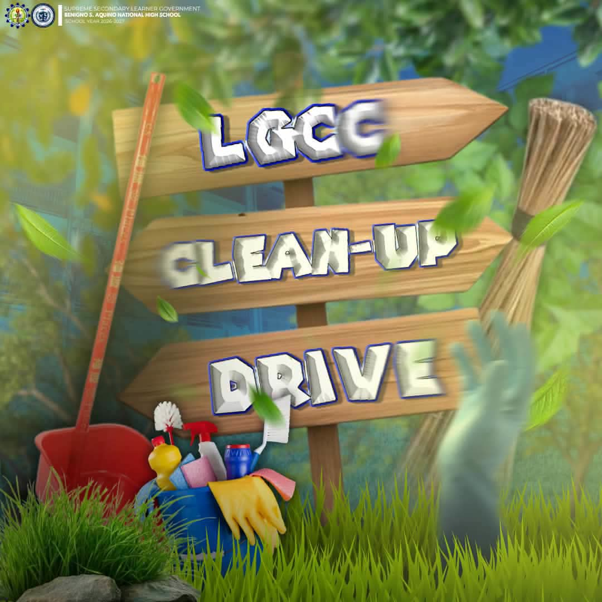

In pictures
From the record
Photographs attached to activity records. An image belongs to the record it was filed with, never to a separate album that drifts out of date.


A shared registry and publishing standard for Supreme Secondary Learner Governments: one record per school, one public page per record, one national view built from both.
Activity records filed by learner governments, newest first. Each one is an ACR that already had to be written for the division.
Two-day program for National Students Day, 17 to 18 November 2026.
Turnover of the SSLG-funded feeding program for the second quarter.
Drills, orientation and family preparedness kits distribution.
Division-directed survey administration; school memorandum drafted, number unassigned.
Three hundred seedlings planted with the municipal environment office.
Four-day sports competition, with cluster-based cheering and a clean-up rotation.
Photographs attached to activity records. An image belongs to the record it was filed with, never to a separate album that drifts out of date.

Filter by region or search by school, division or town.
| School | Division | Activities | Clubs | Updated | Status |
|---|---|---|---|---|---|
| Bamban National High School Bamban, Tarlac | Tarlac ProvinceRegion III · Cluster IV | 4 | 7 | 16 Nov 2026 | Demo record |
| Bantay National High School Bantay, Ilocos Sur | Ilocos SurRegion I · Cluster I | 4 | 9 | 21 Nov 2026 | Demo record |
| Benigno S. Aquino National High School Concepcion, Tarlac | Tarlac ProvinceRegion III · Cluster IV | 18 | 20 | 24 Nov 2026 | Verified |
| Concepcion East National High School Concepcion, Tarlac | Tarlac ProvinceRegion III · Cluster IV | 5 | 9 | 21 Nov 2026 | Demo record |
| San Isidro National High School San Isidro, Nueva Ecija | Nueva EcijaRegion III · Cluster IV | 4 | 10 | 18 Nov 2026 | Demo record |
| Sta. Cruz National High School Sta. Cruz, Cebu | Cebu ProvinceRegion VII · Cluster VI | 4 | 8 | 9 Nov 2026 | Demo record |
| Tugbok National High School Tugbok, Davao City | Davao CityRegion XI · Cluster IX | 3 | 6 | 28 Oct 2026 | Demo record |
The website is the smallest part of this. What makes it work is that every school fills the same record, so the national view can be built from it without anyone copying anything by hand.
School, division, region, cluster, term, adviser, officers. One JSON file per learner government, verified by the adviser.
The record generates the school's own site. Activities, issuances and finance reports appear the moment they are filed, not three weeks later.
Every school feeds the national feed, the issuance index and the transparency table. A division can see all of its schools on one screen — see a division.
Which learner governments publish financial reports, how often, and how fresh their last filing is.